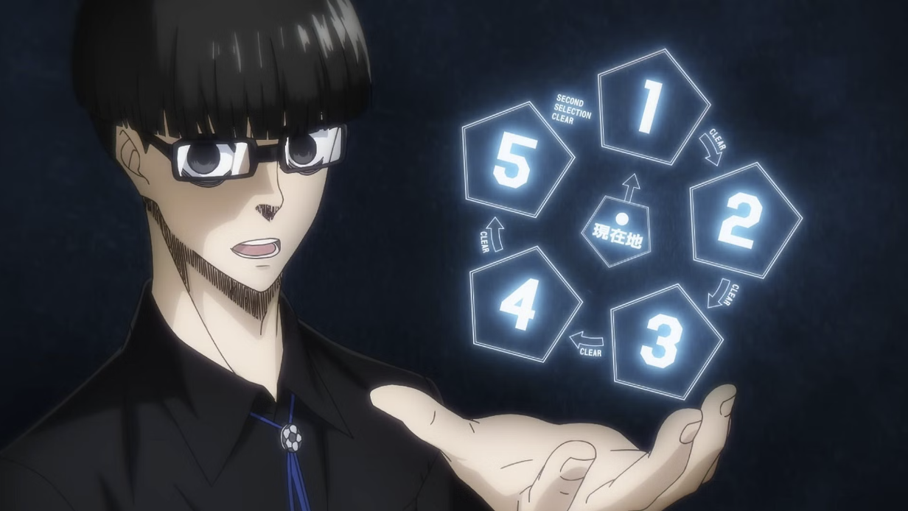
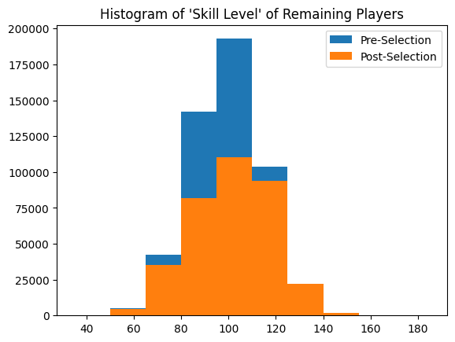

Blue Lock Second Selection Math
Table of Contents
On the Blue Lock Second Selection
The following contains spoilers for the first season of Blue Lock, or the first 100 or so chapters of the Manga. The show is quite good, so I recommend watching it if you're interested in this post.

The popular anime / manga series Blue Lock has a straightforward yet ridiculous premise. 300 of the top high school soccer forwards in Japan are brought together and put into a training facility where, eventually, 299 of them are told they will be eliminated. If you are eliminated from Blue Lock, you are barred from participating in Japanese soccer forever, no matter how good you are. The promise is that the 1 surviving player will be transformed into the best striker in the world, which is high enough expected value to all of these players that they all willingly participate.
As such, much of the show is about activities where players are eliminated from the facility. One of the selections (the second), in particular, had a somewhat convoluted percolation-like process which got me curious about the actual math behind it. This process is as follows:
- Begin with 125 players. Eliminate some proportion of players in single-player "Blue Lock Man" challenges.
- Make the players who passed the first stage pair into groups of three. These players will fight other teams of three.
- Teams who win steal the best player from the losing team, and go to a stage where they fight other teams of four. Teams who lose drop to a stage where they fight other teams of two.
- If you lose as a team of 2, and you aren't picked, you are eliminated. If you win as a team of 4, you select one player from the other team and the five of you clear the stage.
One interesting question you can ask about this is: how many players died on the blue lock man stage? The anime and the manga never show any player being eliminated at this stage, which gives off the impression that it may not be that challenging. However, 35 players (7 teams) clear the head-to-head phase. If we model this process, we can figure this out.
Simulating The Second Selection
We are going to start by writing out this process in python. The code for a rough approximation of the second selection can be found below. Some nuances here:
- Teams are paired randomly (not exactly correct, in the show strong players generally paired with strong players, but there were some notable exceptions to where this would be complicated to model as an actual social problem).
- Results are done by multiplying the values of every member on the team together and selecting the highest total product team as the winner. This feels close enough to the "chemical reaction" framing the show had in mind, but I probably could have simulated probability to score goals or whatever. Feel free to reimplement this on your own if you have other ideas for this, but it's out of the scope of this post.
- This stage will continue until nobody can play games anymore. It's possible you can select only the first seven teams that clear the selection, and simply stop after that, but it would create an urgency to the selection phase which was absent in the actual story: teams of four who play on the same day as other teams of four would feel pressured to play earlier in the day, and there's probably injury concerns to rushing into playing more games as fast as possible. This feels thematically antithetical compared to losing because you lost.
- It's still certain that some players will be "alive" and there will not be enough players remaining for them to play against. For example: the final team of 4 needed to play another team of 4 in order to form the last group of 5. The losing team is knocked down to the stage of 3, but since there are no other teams of 3 left, I am just assuming all these players get eliminated.
import random from functools import reduce from operator import mul import matplotlib.pyplot as plt import numpy as np import copy def append_bylen(team, all_teams, new_two, new_three, new_four): if len(team) == 1: all_teams['dead'].append(team) if len(team) == 2: new_two.append(team) if len(team) == 3: new_three.append(team) if len(team) == 4: new_four.append(team) if len(team) == 5: all_teams['fives'].append(team) return all_teams, new_two, new_three, new_four def play(team1, team2): product1 = reduce(mul, team1) product2 = reduce(mul, team2) if product1 < product2: winner, loser = team1, team2 else: winner, loser = team2, team1 return winner, loser def add_subplot(ax, all_teams, days): list_lengths = [(key, len(lst)) for key, lst in all_teams.items()] labels = [x[0] for x in list_lengths] lengths = [x[1] for x in list_lengths] ax.bar(labels, lengths) ax.set_ylabel('Teams') ax.set_title(f'Teams after day {days}') ax.set_xticklabels(labels, rotation=45, ha='right') def visualize_days(data, days): num_rows = (days + 2) // 3 fig, axs = plt.subplots(num_rows, 3, figsize=(15, 5 * num_rows)) for i, ax in enumerate(axs.flat): if i < len(data): add_subplot(ax, data[i], i) else: ax.axis('off') plt.tight_layout() plt.show() def second_selection(numbers, verbose=False): # Step 1 (Blue Lock Man / People Can't Find Teams) while len(numbers) % 3 != 0: numbers.remove(min(numbers)) # Step 2 (Players form teams of three) all_teams = { 'dead': [], 'twos': [], 'threes': [numbers[i:i + 3] for i in range(0, len(numbers), 3)], 'fours': [], 'fives': [] } days = 0 matches = 0 subplots_data = [] if verbose: subplots_data.append(copy.deepcopy(all_teams)) # Step 3 (Players play in selection until no more games can be played) while any([len(x) >= 2 for x in [all_teams['twos'], all_teams['threes'], all_teams['fours']]]): # 3a (teams pair up) random.shuffle(all_teams['twos']) random.shuffle(all_teams['threes']) random.shuffle(all_teams['fours']) new_two = [] new_three = [] new_four = [] paired_teams = [] for team_list in [all_teams['twos'], all_teams['threes'], all_teams['fours']]: for i in range(0, len(team_list) - 1, 2): paired_teams.append((team_list[i], team_list[i + 1])) unpaired_teams = [] for team_list in [all_teams['twos'], all_teams['threes'], all_teams['fours']]: if len(team_list) % 2 != 0: unpaired_teams.append(team_list[-1]) for team1, team2 in paired_teams: # 3b (teams play) matches += 1 winner, loser = play(team1, team2) # 3c (winner steals best player of loser) max_val = max(loser) loser.remove(max_val) winner.append(max_val) for team in [loser, winner]: all_teams, new_two, new_three, new_four = append_bylen(team, all_teams, new_two, new_three, new_four) for team in unpaired_teams: all_teams, new_two, new_three, new_four = append_bylen(team, all_teams, new_two, new_three, new_four) all_teams['twos'] = new_two all_teams['threes'] = new_three all_teams['fours'] = new_four # 3d (next day) if verbose: print(f"end of day {days}, total matches {matches}") subplots_data.append(copy.deepcopy(all_teams)) days += 1 # Step 4 if verbose: print(f"Selection complete: total matches {matches}") visualize_days(subplots_data, days) return all_teams['fives'] numbers = [np.random.normal(100, 0.2) for _ in range(51)] selected_teams = second_selection(numbers, verbose=True)

How Many Players Made It Past Blue Lock Man?
If you assume nearly every player makes it past Blue Lock Man, then this process will yield 19 full teams of 5 who survive this selection. That is to say: only 30 players are eliminated in this phase at absolute maximum. A useful thing to keep in mind about this process is that it is symmetrical: teams can only win or lose, so assuming everybody plays each "day", teams will be eliminated and pass at roughly equal rates.
That is, \(n\) teams (or \(5n\) players) will pass the selection, \(n\) players will be eliminated in the stage of 2, and the rest get caught in purgatory where they can no longer find opponents. This actually allows us to calculate with relatively fine precision how many players actually made it through Blue Lock Man.
surviving_teams = [] for i in range(35,125): numbers = [np.random.normal(100, 0.2) for _ in range(i)] selected_teams = second_selection(numbers) surviving_teams.append(len(selected_teams)) plt.title("Surviving Teams vs Blue Lock Man Challenge") plt.plot(list(range(35,125)), surviving_teams) plt.xlabel("Players Past Blue Lock Man") plt.ylabel("Teams Who Clear Selection") plt.show()

If 35 players survive, and 7 teams of 5 pass the selection, then we most likely entered this phase with between 48 and 51 players; either 16 or 17 teams of three. It's possible for a few more players to pass the initial stage (up to 53), but if they cannot find teammates or form a group of three, then I'm assuming they're eliminated as well.
How Much Does This Affect Skill Distribution?
A very funny thing about this is that it is almost entirely useless as a filtration mechanism for the players involved. If we wanted 35 players, then only 18 players die at most, even including the players who get trapped in "purgatory" rather than getting eliminated outright.
We can run this process a large number of times to see how the distribution shifts, and it's very striking how little this moves the distribution.
all_nums = [] all_chosen = [] for x in range(10000): numbers = [np.random.normal(100, 15) for _ in range(51)] selected_teams = second_selection(numbers) for n in numbers: all_nums.append(n) for t in selected_teams: for n in t: all_chosen.append(n) print(np.mean(all_nums)) print(np.mean(all_chosen)) plt.title("Histogram of 'Skill Level' of Remaining Players") plt.hist(all_nums, label="Pre-Selection") plt.hist(all_chosen, label="Post-Selection") plt.legend() plt.show()
Mean: 99.95 -> 101.53

The means and standard distributions move somewhat rightwards, but it's fairly clear the purpose of this stage of the selection is not to filter out lower-skill players.
Put simply: the purpose of this part of the selection is to generate a lot of games with the threat of elimination (i.e. high-stakes matches) where the actual threat of elimination is comparatively much lower than it seems. With 51 players, we end with 29 matches played between them all, and only 18 players eliminated at the end of it, at a rate of 0.65 eliminations per game. It's actually, counterintuitively, extremely forgiving compared to virtually every other phase of Blue Lock, despite being given comparatively more emphasis. There's relatively low risk of really strong players getting eliminated here (although it does rarely happen: see Kunigami), and generally the players who get eliminated tend to be pretty average on average.
It's amusing to look at this after reading/watching Blue Lock, and to realize that this entire phase was predominantly constructed around giving the successful players tons of matches to build up their mental strength, rather than to do any noteworthy filtering of players by skill. While the threat of elimination was necessary to make the participants play as if their careers depended on it, it's clear from running these simulations that the actual difficulty of this phase was the "light warm up" of the Blue Lock Man exercise, where roughly 60% of the field was summarily eliminated. Having cleared that, the filtered, capable players now need to play a lot of serious games with each other to learn to play in coordinated fashion, which is what this complex, somewhat convoluted phase ended up being.
Closing Thoughts
Two things jump out at me as funny here:
The first, is that Igarashi cleared the Blue Lock Man phase. My impression of the first phase is that each player recieved a customized exercise aimed at making them improve as quickly as possible. I wonder if there was an element here of "specialize or die", wherein players were provided with tasks which would give them unique weapons they were deemed potentially suitable for, and would perish here otherwise. Without delving into manga spoilers, I do wonder if Igarashi lucked out with his eventual weapon, or if his actual ball control / skill level is simply underplayed for comedic effect, with him actually, truly being a 60th percentile player in the second phase.
The second, is that 8 of the approximately 51 players who passed the Blue Lock Man phase were from Isagi's Team Z. To me this feels like a pretty blatant overrepresentation, which I probably could chaulk up to convenience on the part of the mangaka. This little tidbit is perhaps more plausible before looking into the math, but the only team Z players who didn't make it past seem to be Lemon, Kuon, and Imamura, with Naruhaya and Kunigami losing in the tournament phase. Not only are they overrepresented in the tournament phase (~15% of the players), they're also overrepresented in the even more exclusive "eliminated in tournament phase" club (28.5% of the eliminated players). Team Z was so strong!
In any case, the elimination structure of Blue Lock was very fun for me to turn over in my head. Like many works of this type, they sort of dropped this complex structure on the audience and then mostly asked them not to think too hard about it. But here I am, thinking hard about it anyways! Learning about the approximate difficulty of the Blue Lock Man phase gave me somewhat better appreciation for the relative difficulty of the different components, independent of the screen time those components got.
If you play around with the code in this post and come up with any other fun conclusions, feel free to let me know! If you get some sort of different result with different distributions or models of playing matches, I would love to hear about them - drop me a line on twitter @Ambisinister_.